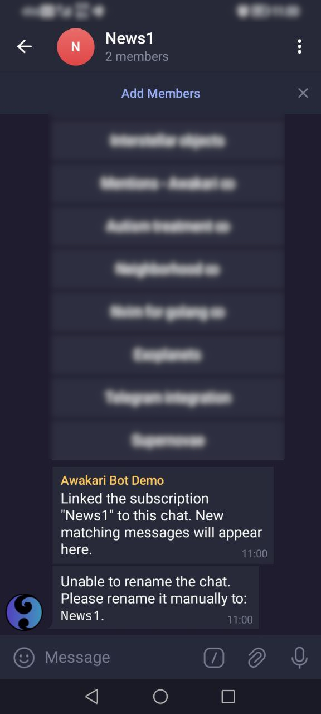
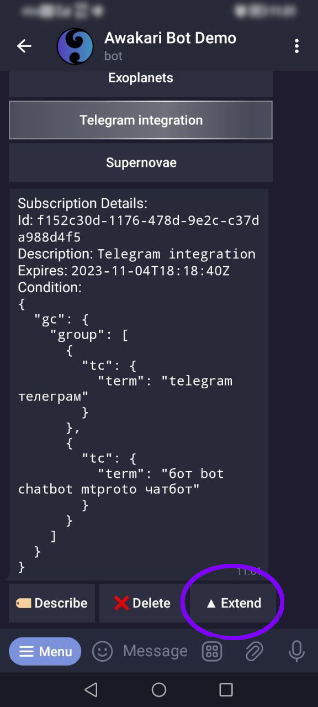

To start using the Awakari Bot it's necessary to agree with Terms of Service and tap the "START" button.

Awakari Bot: manage subscriptions and usage limits, publish messages.
The button "Subscription" is for displaying the subscriptions' usage. First, it displays the usage statistics and current limit. It's followed by the user's subscriptions list.
Note the special hints after a subscription description:
| ∞ | subscription never expires |
| ⏳ | subscription expires soon (less than 1 week) |
| ⚠ | subscription has been expired |
Create a new target group to link the subscription to it.

Give a name to the new group to find it later. Ideally, the group name should match the subscription description.

Tap "Link Chat" button under a selected subscription details.

Select the target group from your groups list.

Tap "Add bot as Member" button in the appeared dialog.

Sometimes Telegram shows an error when adding the bot to a new group. In this case, tap the back button and select the group again. The error then disappears.

After the subscription is linked to the chat, the bot starts to deliver the matching messages into the group.
The bot will remind when subscription expires sooner than in 1 week.
The bot will send a warning message if subscription is expired.

|  | 2.1.2.1. Tap the "▲ Extend" button in the subscription details. |
|
2.1.2.2. The bot will request the number of days to add. Reply with a number in the range of 10-365. After this the bot will request a payment to extend the subscription. A successful payment will complete the operation. |
There are two ways to create a new subscription: Basic and Custom.
Basic allows to create a simple text matching subscription specifying a list of keywords to match.
Custom is for advanced subscription conditions like number conditions or conditions grouping.
2.2.1.1. Tap the "+ Basic" reply keyboard button under "Subscriptions".

2.2.1.2. Reply with subscription name (actually a description without spaces) followed by space and space separated list of keywords.

2.2.1.3. After subscription is created, the bot offers to link it to a chat to receive the matching messages.
2.2.2.1. Tap the "+ Custom" reply keyboard button under "Subscriptions".

2.2.2.2. The form to define advanced matching conditions appears. Available condition types are "Group", "Text" and "Number". Once done, tap the "Submit" button below to create the subscription.

2.3.1. Tap the "▲ Limit" reply keyboard button under "Subscriptions".

2.3.2. The form to define the subscription count limit appears. Once done, tap the "Submit" button below to apply new limits. This requires a payment.

3.2.1. Tap the "+ Basic" reply keyboard button under "Messages".
3.2.2. Reply with the message text.

3.2.3. If the daily message publishing limit is reached, it's required to pay per additional message publication.
3.2.4. A successful message publication looks like this.